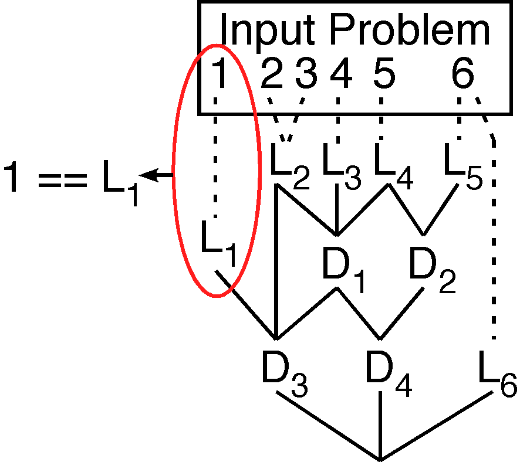
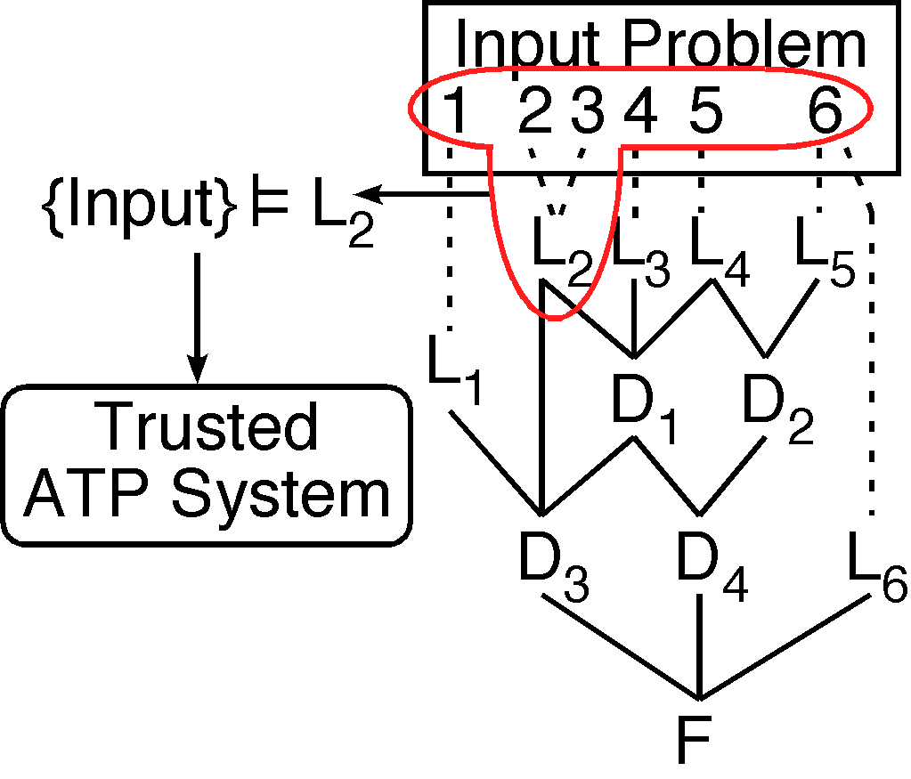
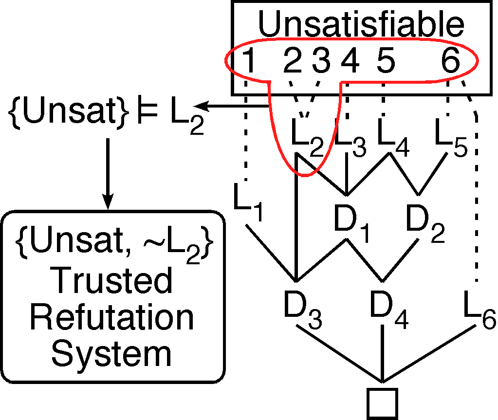
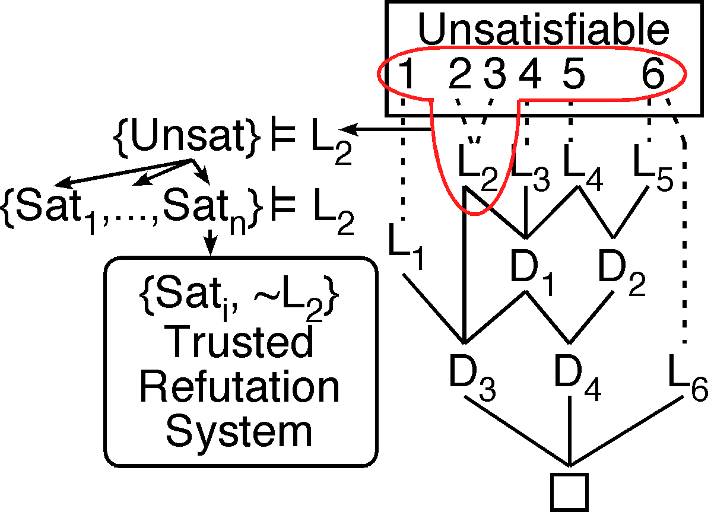

Verifying Leaf Formulae

Matched and Derived Leaves

- Check that the leaf matches an input formula
- Some ATP systems preprocess input
- Leaves are derived from input
- Obligation to prove leaf formula from input problem
- Undocumented conversion to CNF ... aaargh
- Clauses from the negated conjecture
- Clauses with Skolems
Proofs by Refutation


- Discharge through use of proof by refutation is incomplete
- Check for relevance will fail
- Split problem into satisfiable parts